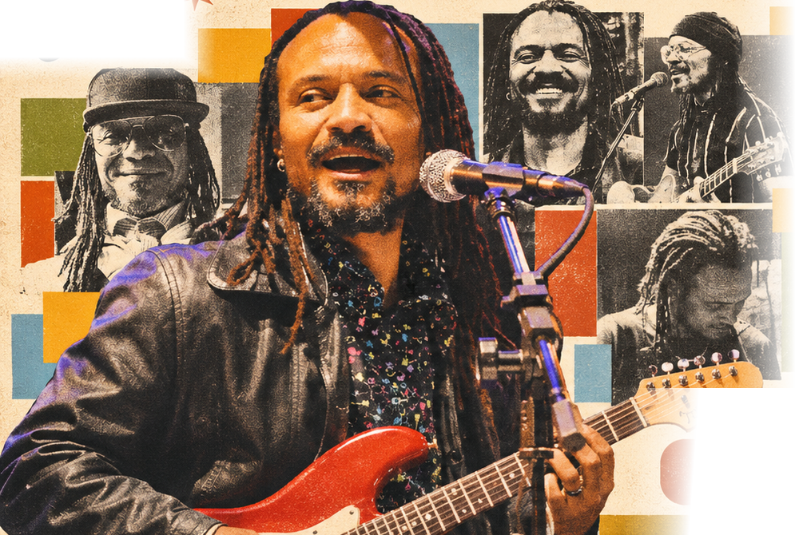
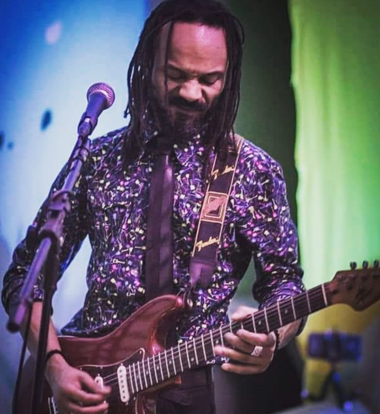

O despertar do groove
Minha formação foi atravessada por diferentes tradições musicais. A guitarra tornou-se central na minha expressão, enquanto o canto ampliou minha comunicação com o público.

O Groove do Funk,
o Suingue do Brasil.
FUNK • SOUL • RAP • ROCK • REGGAE • SAMBA-ROCK
Minha trajetória musical se constrói no encontro entre a canção brasileira, a guitarra e as tradições da Black Music. Encontro nas obras de Tim Maia, James Brown e Funkadelic referências para pensar o ritmo como uma linguagem capaz de reunir corpo, emoção e invenção. Como cantor, compositor e guitarrista, desenvolvo uma sonoridade que atravessa o pop, o funk, o soul, o rock, o reggae e o samba-rock.
Em 1996, fundei a banda Vitória Soul, experiência importante na construção da minha identidade como compositor e intérprete. Canções como “Mande um Sinal”, “A Hora da Dança” e “Estrada” integram essa trajetória. Ao longo dos anos, compartilhei experiências musicais com artistas e músicos de diferentes vertentes da cena brasileira, ampliando meu repertório de encontros e experimentações.

Minha formação foi atravessada por diferentes tradições musicais. A guitarra tornou-se central na minha expressão, enquanto o canto ampliou minha comunicação com o público.
Em 1996, criei a Vitória Soul. A experiência coletiva amadureceu minha relação com palco, arranjos e composição. Atuei também como tenor no Coral da UFRGS.
Meu projeto autoral ganhou circulação com o EP Dom Cray, associado ao selo 360Musica, e o videoclipe de “Bem Me Quer”. Os créditos detalhados estão em conferência.
Compartilhei experiências com artistas como Jorge Ben Jor, Paulo Miklos, Claudio Zoli, Alexandre Pires, BNegão, Black Alien, Max de Castro, Céu e integrantes de Funk Como Le Gusta, Clube do Balanço e Banda Metrô.
Hoje, continuo desenvolvendo minha atuação como cantor, compositor, guitarrista e educador musical, mantendo o groove como centro da criação.
Espaço reservado para matérias verificadas, entrevistas, rádios e portais, incluindo Rota Cult quando houver link confirmado.
Apresentei-me em casas e eventos como Bar Brahma, Coco Bambu, Surf’s, Garagem SteakHouse, Villa Gourmet, Garimppo, Major, Gula e Gula, Âncoras, Quintal, Verão Choperia, Capitan Chopp São Sebastião, Espeticho, Marujos, Churras Mais, Rock Bar e eventos da Secretaria de Turismo de Caraguatatuba.
Selo: 360Musica (informação fornecida para conferência documental).
Projeto autoral que articula canção, guitarra e sonoridades da Black Music. Destaques: “Bem Me Quer”, “Só o Amor” e “A Hora da Dança”.
Participações informadas: Tonho Crocco em “Só o Amor” e Lica Tito em “A Hora da Dança”. Confirmar funções e créditos antes de publicação definitiva.
O player oficial do Spotify exibe a capa do EP e permite ouvir as faixas diretamente nesta página. O link do Apple Music permanece pendente de confirmação.
Roteiro-base para curadoria. A sequência definitiva e os dados autorais serão confirmados com o artista.
Letra integral pendente de envio e autorização do titular.
Letra integral pendente de envio e autorização do titular.
Minha apresentação reúne guitarra, voz, ritmo e uma linguagem musical que aproxima diferentes gerações da Black Music e da música brasileira. O espetáculo pode integrar festivais, eventos culturais, casas de espetáculo e projetos institucionais, mediante definição de formação artística e condições técnicas.
Novas datas serão anunciadas em breve. Consulte a disponibilidade para festivais, eventos culturais e casas de show.
Consultar agendaRider técnico, mapa de palco, formação da banda e necessidades de produção devem ser aprovados pelo artista e pela equipe técnica.
Minha proposta parte da prática musical, da escuta e da construção do groove. Trabalho com guitarra, percepção rítmica, interpretação e repertórios ligados ao funk, soul, pop e à música brasileira.
As atividades podem ser adaptadas a estudantes iniciantes, intermediários e avançados, respeitando a experiência e os objetivos de cada pessoa. Também atuo no ensino de canto e contrabaixo. Modalidades online e presenciais sujeitas à confirmação de disponibilidade.
Dou aulas de canto, guitarra e contrabaixo na escola E-Brasil, em Caraguatatuba (SP). Entre em contato para conversar sobre horários, formato e objetivos de estudo.
Leve o groove de Dom Cray para seu palco, projeto cultural ou experiência musical. Contratação de shows, festivais, convites institucionais, projetos fonográficos, entrevistas, aulas e workshops.
Links de YouTube e plataformas de música serão incluídos após confirmação. Para shows e aulas, fale diretamente pelo WhatsApp.